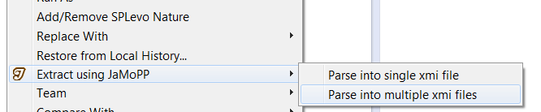

Utils
Utilities in any kind of way to simplify work with or in the KoPL project.
JaMoPP Eclipse Model Extractor
An Eclipse plugin providing the JaMoPP model parser as context menu.
Install, right click your project of choice and select
- "Extract Using JaMoPP" > "Parse into single xmi file"
- "Extract Using JaMoPP" > "Parse into multiple xmi files"

The former will build one big xmi file containing all CompilationUnit and contained model elements. The later will create a separate xmi file for each CompilationUnit.